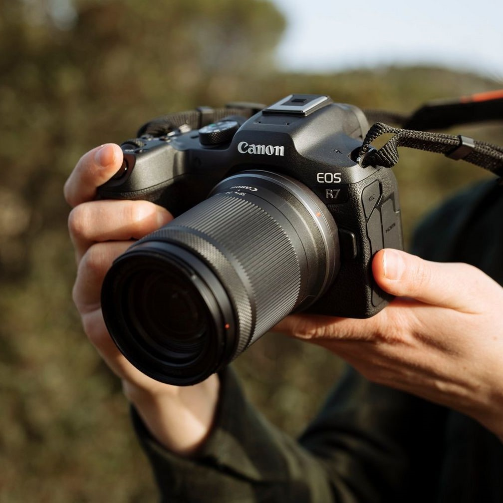
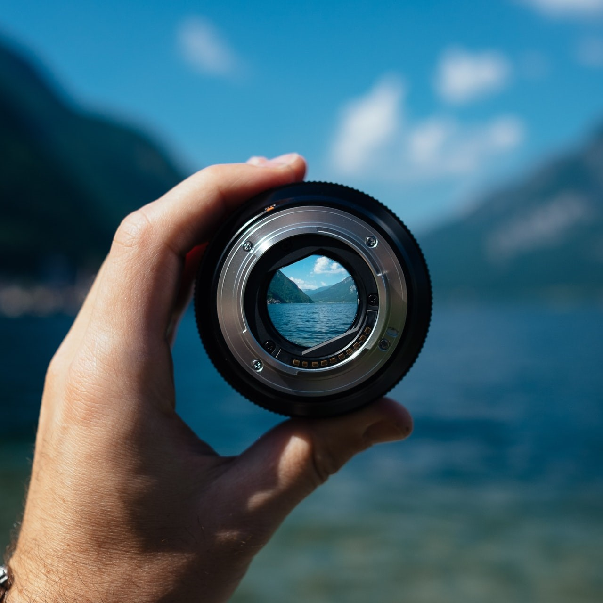

Canon EOS R6 je brezrcalni fotoaparat polnega formata, ki ponuja odlično kakovost slike, hitro neprekinjeno fotografiranje in napreden sistem samodejnega ostrenja. Idealen je za tako profesionalne fotografe kot tudi navdušence.
Panasonic Lumix GH5:
Panasonic Lumix GH5 je brezrcalna kamera, posebej priljubljena med videografi zaradi svojih naprednih video zmogljivosti. Ponuja visoko kakovostno 4K video snemanje in številne profesionalne funkcije za ustvarjalno snemanje.

Objektivi

Fotoaparat:
Canon EF 50mm f/1.8 STM
Canon EF 70-200mm f/2.8L IS III USM
Canon EF 24-70mm f/2.8L II USM
Canon EF 16-35mm f/4L IS USM
Kamera:
Panasonic Lumix G X Vario 12-35mm f/2.8 II ASPH. POWER O.I.S.
Panasonic Lumix G X Vario 35-100mm f/2.8 II POWER O.I.S.